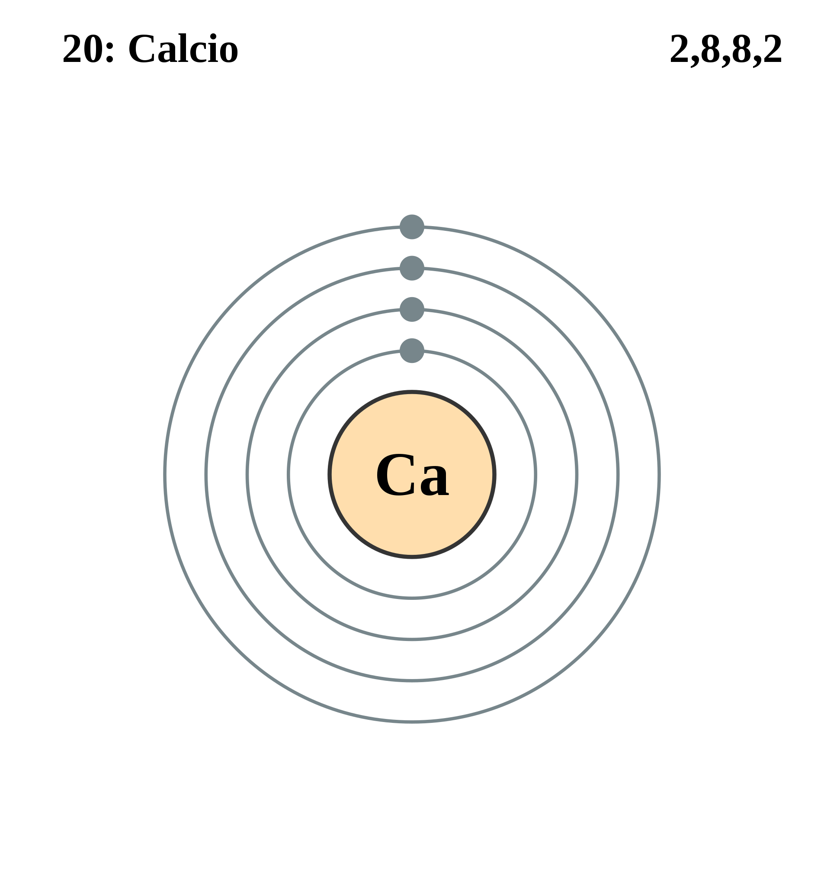

|
|
||
|
CALCIO El calcio puro se descubrió en 1808. Este metal alcalinotérreo es el quinto más abundante de la corteza terrestre y se encuentra en hojas, huesos, dientes y conchas. No se encuentra en la naturaleza por sí solo y se puede encontrar como parte de la piedra caliza, el yeso y la fluorita. Este metal bastante duro tiene un color plateado y forma una capa blanca en contacto con el aire, reacciona con el agua y arde con una llama de color rojo amarillento. Se utilizan ampliamente tanto los compuestos naturales como los sintéticos. Cuando se mezcla con la arena, el óxido de calcio endurece la argamasa y el yeso, y el calcio presente en la piedra caliza es un ingrediente clave en el cemento Portland. Otros compuestos importantes son el carburo, el cloruro, la cianamida, el hipoclorito, el nitrato y el sulfuro. |
 |
DATOS Número Atómico: 20 Peso Atómico: 40.08 Electronegatividad: 1.00 Configuración Electrónica: [Ar] 4s² Estados de Oxidación: +2 No. de Electrones de Valencia: 2 |